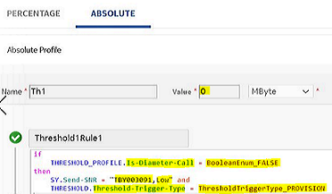
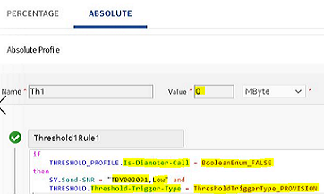

Before this feature, when a subscriber was created and a subscription was purchased or already associated to a group but the resource was empty at the time of subscriber creation, the policy counter status being sent to PCRF by the OCS server was the default value (as -99) in the initial SLA as response. However, the expected policy counter state was the actual policy counter state after evaluation of its policy threshold as configured by the operator.
This feature provides the actual policy counter status as a result in SLA when a newly provisioned prepaid subscriber subscribes to a bundle, a bucket resource is created with zero volume, or a subscription is offered through ChangePlan.
For example, create a group with 4 bundles and attach a policy counter to the group. Apply an Aggregate View (AV) to the group, which has SO threshold applied on it. A group policy counter, which is a resource-based counter has a threshold applied for the first data consumption (Absolute from Start) at zero. The threshold at zero for provisioning as Absolute from Start with policy counter state as validVolume and the threshold at zero for Diameter request as Absolute from End with policy counter state as NoValidVolume.
As per the previous behavior, if a device was attached to the group and the group had a subscription but there was no volume in the group, which meant that subscription had buckets with zero initial value, then the policy counter state being returned was -99, which was mapped at PCRF as HIGH. Therefore, when PGW sent a Gy CCR at OCS, no volume was there on the group subscription, a CLR is returned back to the network, and subscriber was never redirected to the portal for top-up.
With this feature, if a device is attached to the group and the group has a subscription but there is no volume in the group, which means subscription has buckets with zero initial value, then the policy counter state is returned as defined, which is noValidVolume because bucket though exists but has zero initial value mapped at PCRF as REDIRECT. Therefore, PGW results to Gy CCR-I request after the redirect and accordingly, the call flow continues.
Additional information
Consider the following points for this feature:
-
This functionality is applicable to:
-
AV on device, group, or both.
-
create Bucket, ChangePlan, and a new subscription created particularly for a new subscriber.
-
-
AV is of Charging Service type and applied to a group.
-
There are no adaptation for counter resources.
-
Bucket is always created in the subscription.
-
During a subscription add or update, if an AV or bucket has both old unused value (before subscription add or update) and new unused value (after subscription add or update) as zero, then thresholds of type Absolute from End is evaluated.
Example
With this example, it is verified that the actual policy counter state in SLA and SNR are sent when a threshold is attached to a policy counter and AV.
Provisioning:
-
Set the Default Signaling State in SLA (Initial) as false.
-
Create a charging service CS1 with a bucket Bucket1 and bucket balance as zero. Associate CS1 to a bundle Bundle1.
-
Create two thresholds TPG_teeth003091 of Absolute from End type and TPG_ABS003091 of Absolute from Start type:
For Absolute from End threshold:
For Absolute from Start threshold:
 -
Create an AV of Charging Service type and attach the TPG_teeth003091 and TPG_ABS003091 thresholds to that AV.
-
Create a resource-based policy counter and attach the counter threshold (Absolute from Start) to it with following conditions:
-
If charging is done from a device, then set the policy counter state as HIGH.
-
If charging is done from a group, then set the policy counter state as LOW.

-
-
Create an account, device (with charging group first), and a group.
-
Attach AV and counter to the group.
-
Attach subscription to the group.
Call processing:
-
Execute a Gx initial and terminate call.
-
Update the bucket balance using Bucket Update Instance API set to 20.
-
Execute a Gx initial call.
-
Execute a Gy call:
CCR(I): RSU = 10
CCR(U): USU=10, RSU = 10
CCR(T): USU = 10
-
Execute a Gx terminate call.
Verification:
-
When the first Gx initial and terminate calls are triggered (when bucket balance is zero), the policy counter state is returned as LOW in SLA.
-
After the bucket update, when Gx initial call is executed, the policy counter state is returned as HIGH in SLA.
-
When a Gy call is initiated and CCR(I) request is triggered, SNR is sent with policy counter state is returned as LOW in SLA as charging is done from group.